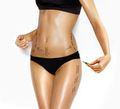

NUESTROS SERVICIOS
sistema life

Sistema de biofedback no invasivo; que permite tener una información completa del paciente, examinando el organismo en su totalidad para establecer un diagnostico de la funcionalidad de órganos y tejidos del sistema energético del cuerpo humano, ayudándonos a identificar en su etapa inicial una enfermedad; además actual como regenerador terapéutico contribuyendo a realizar una medicina preventiva y orientándonos sobre la terapéutica de los procedimientos y medicamentos de medicina integral a seguir.
